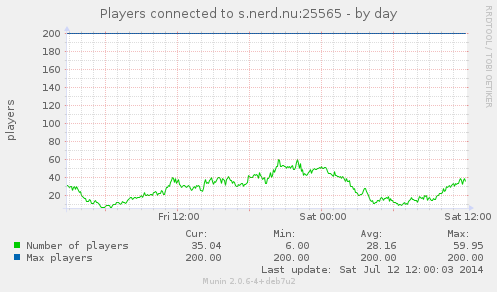
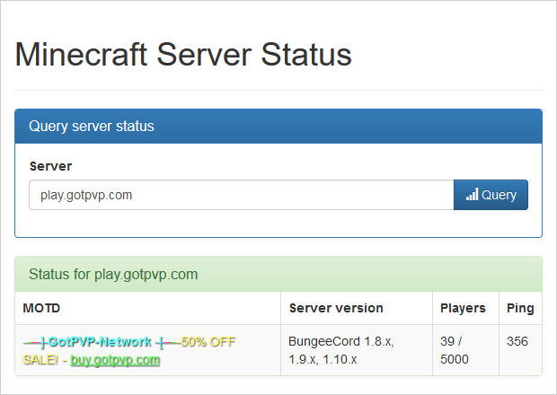

Introduction
PHP class, web page, CLI tool, and Munin plugin to get information from a Minecraft server.
Protocol Support
mcstat supports Server List Ping as seen in 1.7 and later, and 1.5.2.
Server List Ping 1.5.2 works for older Minecraft servers (all the way back to
1.4.2), while the 1.7 Server List Ping should be used for newer setups.
mcstat also supports the UDP full and basic Query protocols.
Usage
minecraft_users_ — A Munin plugin

Install minecraft_users_ like any other munin plugin:
# compile stand-alone minecraft_users_ script
make
# copy the compiled script file to the munin plugins directory
cp minecraft_users_ /usr/share/munin/plugins/minecraft_users_
# ensure that munin can execute the script
chmod 755 /usr/share/munin/plugins/minecraft_users
# create symlinks for the desired Minecraft server hostname and port
export hostname="localhost"
export port=25565
ln -s /usr/share/munin/plugins/minecraft_users_ \
/etc/munin/plugins/minecraft_users_${hostname}:${port}
# reload munin service
service munin-node reloadNo configuration is necessary because minecraft_users_ is a wildcard plugin.
mcstat as a program
src/bin/mcstat.php is a script for querying Minecraft servers. You can install
a stand-alone version like so:
make
cp mcstat ~/bin/mcstatIt's very simple and gets the job done:
mcstat play.gotpvp.comThis will output the status of the given server like so:
play.gotpvp.com 1.7.4 2714/5000 131ms
Uberminecraft Cloud | 22 Games
1.7 Play Now!
Please note: TERM must be set to a known terminal, otherwise PHP spams
stderr unconditionally.
stat.php
src/www/stat.php is a simple web page that lets users query a given server.
Note: stat.php shouldn't be used on a public server as it's not well tested!

Usage as a PHP Class
<?php
namespace randomhost\Minecraft;
require_once realpath(__DIR__ . '/../../vendor') . '/autoload.php';
$status = new Status('play.gotpvp.com');
var_dump($status->ping());This outputs server information in the following format:
array(6) {
["player_count"]=>
string(3) "162"
["player_max"]=>
string(4) "5000"
["motd"]=>
string(182) "§f§f §f§m-§a§m-§c§m-§d§m-§b§m] §b§l GotPVP-Network §b§m-[§d§m-§c§m-§a§m-§e§m-§f"
["server_version"]=>
string(31) "BungeeCord 1.8.x, 1.9.x, 1.10.x"
["protocol_version"]=>
string(3) "127"
["latency"]=>
float(293)
}
Testing
The testing script requires bash, phpunit, and java. The tests are
ran against against a live server running on localhost.
Run the script as follows:
make testBy default src/tests/unit-tests/bin/testrunner.sh tests against all server
versions 1.4.2 and later.
Override this like so:
env Versions='1.7.4 1.7.5' make test